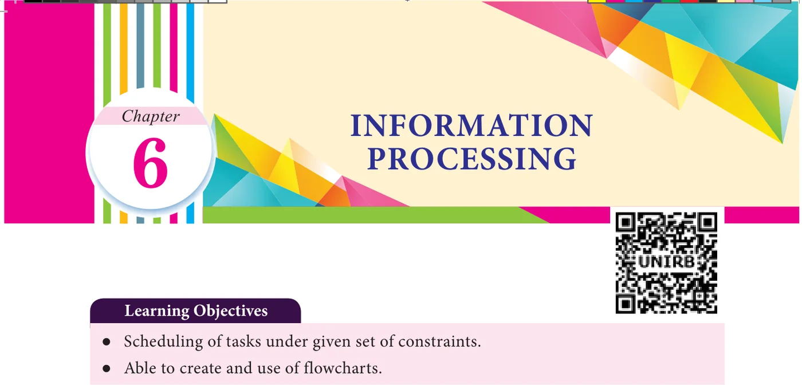
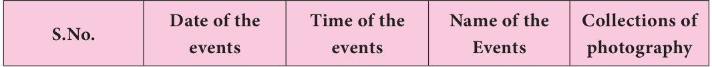
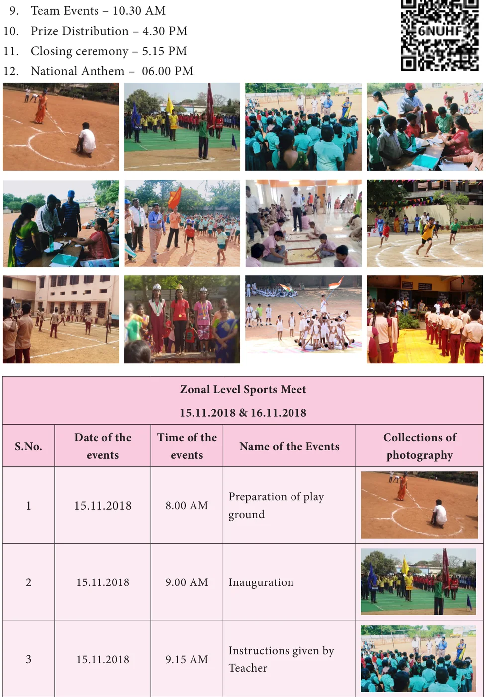
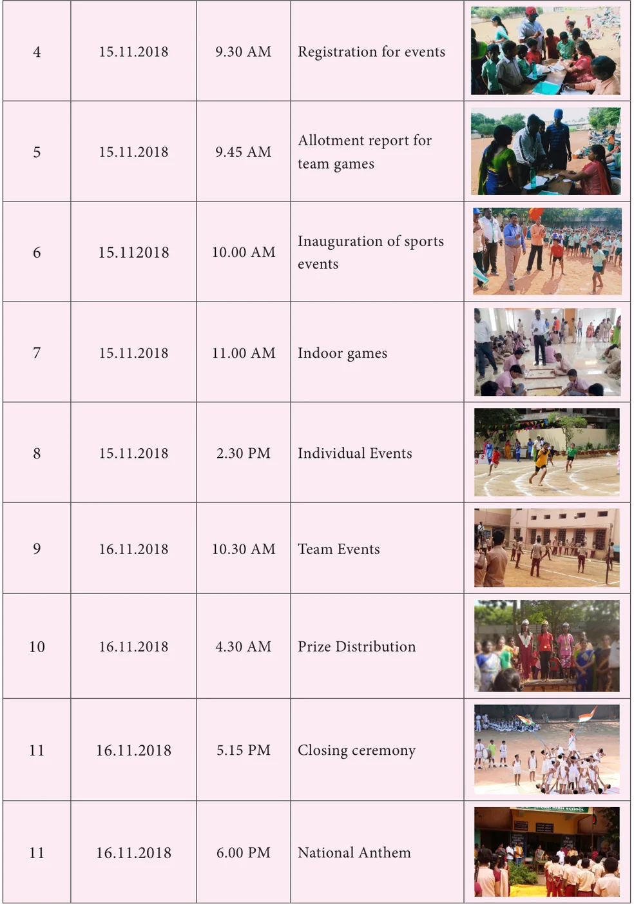
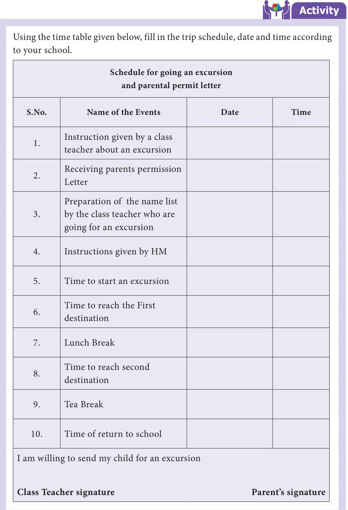
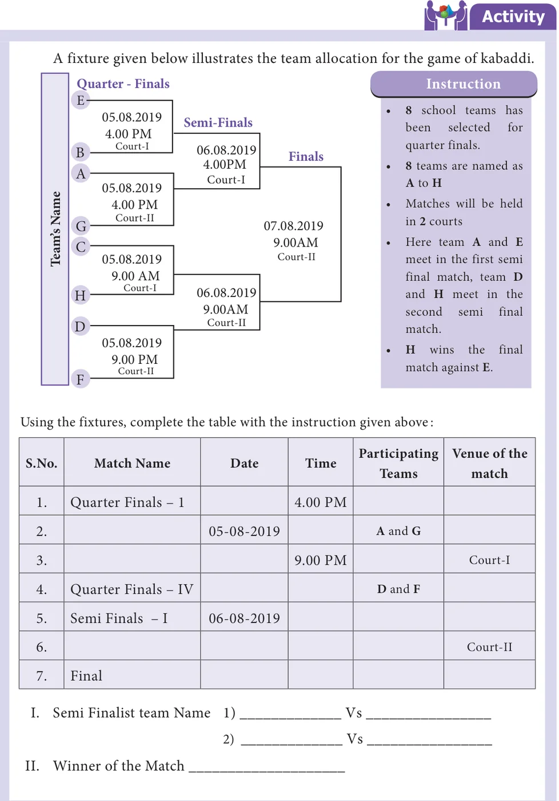
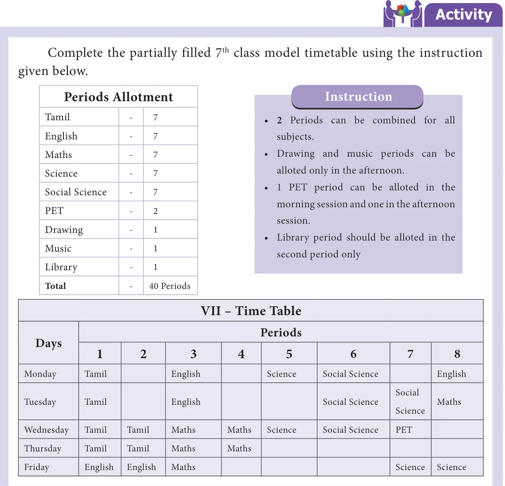

The Process that involves deciding of the ordering of tasks and allocating of appropriate resources among the different type of possible tasks is called scheduling. Schedules can usually be short term periodical plan such as a daily or weekly schedule, and long – term periodical plan which extends for several months or years.
A schedule consists of a list with a timeline with which possible tasks, events or activities are intended to take place or a sequence of is intended to take place.
Situation 1
Here is a programme list of two days Zonal level sports meet held on 15th Nov 2018 and 16th Nov 2018 at Bala's school. To submit the annual report, prepare a schedule and make a table using the column headings given below.

Programmes 15-11-2018
- Preparation of play ground – 8.00 AM
- Inauguration – 9.00 AM
- Instructions given by Teacher – 9.15 AM
- Registration for events - 9.30 AM
- Allotment report for team games – 9.45 AM
- Inauguration of sports events – 10.00AM
- Indoor games – 11.00 AM
- Individual Events – 02.30 PM
16-11-2018




